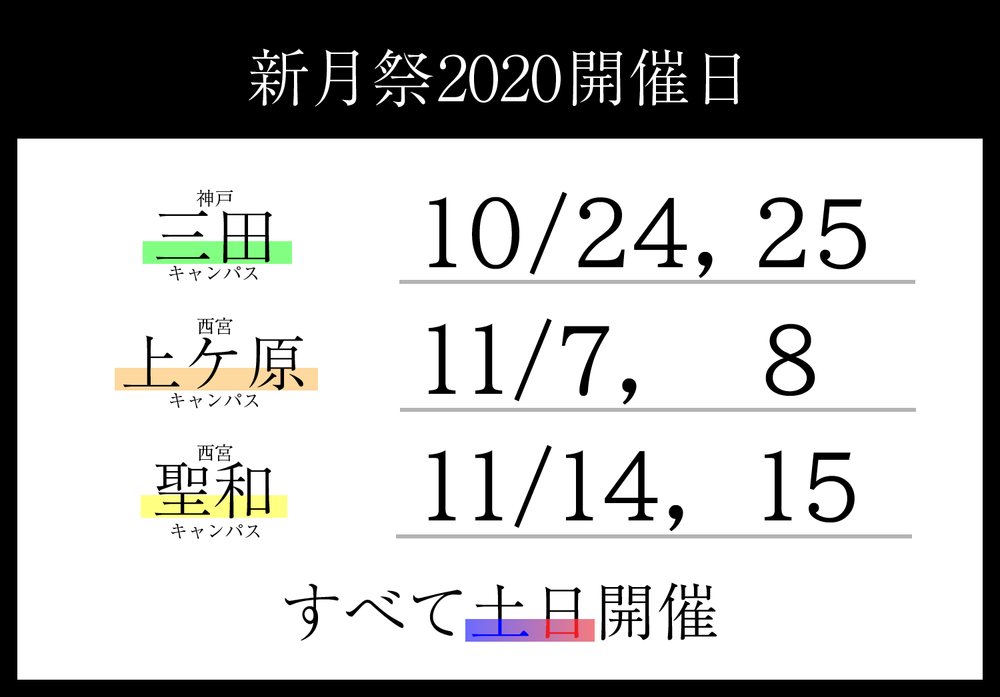

所属キャンパス以外での出展も可能です。
新月祭は関西学院大学の自治学祭です。
関学生の自主的な活動の成果を発揮し、学内外へ発信するための絶好の機会です。
大学祭は大きなサークルや団体のためだけのものではありません。
どんなに小さなサークル・有志団体でも、秀でた芸・作品・活動があれば企画を出展できます。
勿論、普段の活動とは全く異なる企画でも構いません！
模擬店はもちろんどなたでも参加できます。資材などはお貸しできるものもたくさんございますので、事前の準備は想像以上に簡単です！